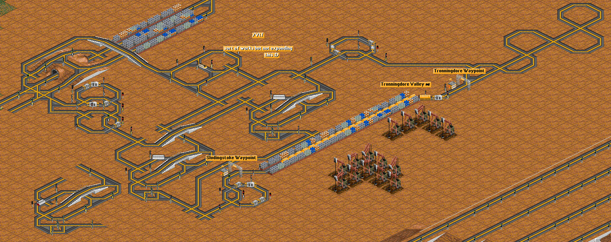
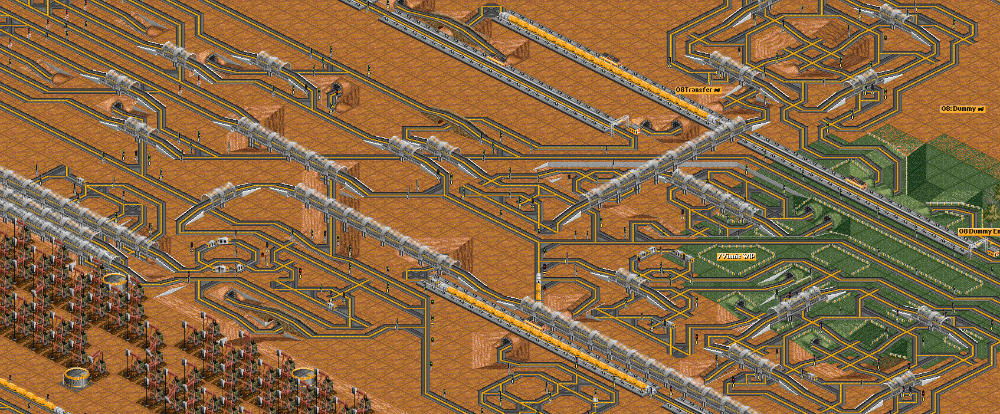
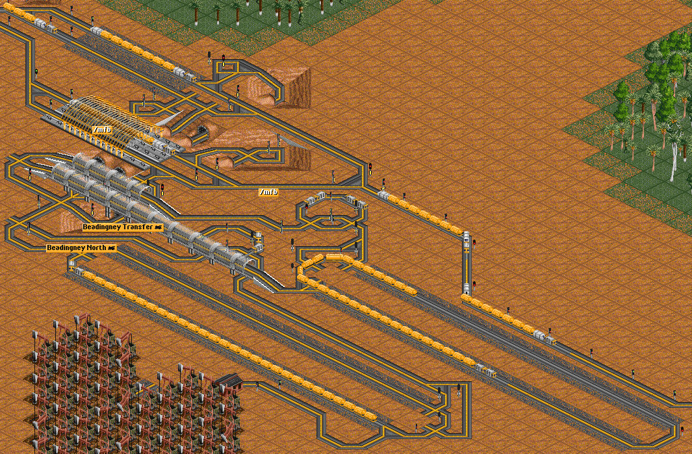

Don’t Try This At Home: ProZone Game 2013
HI, my name is V453000 and welcome to Trainass!
In this episode we will be attempting to cause severe brain damage by reviving Pro Zone Game 13 played in summer 2010, trying to make it work in the current nightly version. As you will be able to read down below, this is easier said than done and carries a lot of complications along the road, but results in a sweet reward with 5000 tiny little bits of madness – ProZone Game 2013.
Reading anything below is at your own risk.
http://wiki.openttdcoop.org/ProZone:Archive_-_Games_21_-_30#gameid_2013
Read the rest of this article >>

Introduction: Why? Oh god WHY?
Since the time ProZone Game 13 was played, there have been some changes to train acceleration in OpenTTD. What that means is that the precisely timed mechanism based on acceleration got broken. However, the issue was not that the concept would break entirely – the actual problem was only that once you loaded the game, the ML started to jam due to desynchronization at the main drop exit. And as the packing of lines entering station was absolute maximum (with a few gaps on the less dense lines), one jam on the exit never stopped jamming, because more trains kept coming than trains able to leave the jamming exit. The ProZone Game 2013 is an attempt to make the game work, and optionally to work absolutely flawlessly and solidly.
Note: to fully understand this article it is strongly recommended to understand the original documentation of ProZone Game 13 first.
Stage 1: Stabilizing the jam
First thing I tried was an attempt to just stop the desynchronization and calm down the jamming. Plus of course I adjusted all of the additional joiner detection so it would fit to the new – longer – acceleration.
The biggest problem in this stage were the SLs. Trains would eventually be kind enough to jam there, at least for a tiny period of time – which was well enough to make the ML jam forever due to the density of trains coming from the station.
Most common error was that the SL simply had not enough throughput as train acceleration was lower now, resulting in much higher chance to cause a jam, and jam the ML, thus jam the drop exit.

Another problem came when a wave of trains came to a primary – and there was not enough oil to load, not enough platforms to let trains load, or even worse if the oil well reduced production, causing one of the first two problems. Either of those resulted in trains waiting, and likely jamming the whole SL split. After upgrading all ML joiners, the SLs were jamming at all times at least somewhere. I made a mechanism to stop the whole ML, and reset the situation – but that resulted in trains creating a wave jamming at SL splits again.
So the obvious closest solution was to expand the SLs. I expanded almost all of them multiple times, but the fight seemed impossible to win, jams always returned sooner or later (usually sooner was the option).
Stage 2: Train genocide (the first one anyway)
Due to experiencing the glorious not-so-victory previously, I came to a conclusion that it would be better to just sell all trains and buy them again. That way I would slowly but steadily increase train count without getting into overcrowding and unfixable jam.
And so it was done, all trains were caught in a few depots on the station exit (which took hillarious amount of time by itself). Then I started to add trains, but adding them station by station was rather tedious and long thing to do. Still, I managed to get up to about 1500 trains – when I was rewarded with We Jam Again 2013 award, personally crafted by the train driver team.
The situation was not as terrible as in the first stage when there were just too many trains, so I finished expanding (and re-expanding) the sidelines, and mainly their splits. Most SLs grew from 2-3 lines in the original game to sizes like 5-9 lines per SL just for the sake of self proclaimed “safety” which was rather far from truth.

Building them was extremely time consuming and there always was the factor of forgetting to connect some station to one of the lines, resulting in lost trains – and lost trains means empty trains on ML where full trains were meant to be. And empty trains accelerate faster, thus desynchronizing on the ML. I fought patiently and courageously, but with all SLs expanded, the ~4625th jam made me consider abandoning this solution.
Even with the most perfect and overkill SLs I could afford, there was always some probability that trains could slow down on the SL splits. And even if the probability was wearing thin as I expanded more and more, there always remained at least some probability – which meant it always caused a jam sooner or later again.
After all this, I quickly realized the only way how to fix this game perfectly, was to use absolutely reliable constructions. Therefore if a SL exit gets jammed, it has to divert traffic elsewhere. Which obviously leads to nothing else but a SRNW.
Note: I made a savegame at this point, so if you want you can look at it here.
Stage 3: Onwards to perfection with SRNW
So the next step was yet another train decimation. All trains were caught and slaughtered in depots, but this time also the SLs and industries came victim to the sight of ProgressDozer9000. With that, the game was clean for a new start again, which made for an excellent opportunity to give others a chance to contribute to this game if they liked to. And that also happened – valiant knights of brainmelt assembled at the sub-tropical battleground in the lands of ProZone to confront the greater evil of DTS (dumb train syndrome). Plans were laid out (DO MAYHEM.) and construction commenced.
First was constructed the most vital part of a SRNW – the overflow with a station at the very end of our network. Even though this station could have been built (one hell of a lot) better, it’s monstrosity inspired more warriors to join in, and in general it set the pace of the game (wtf through the roof).

Then followed all of the various SLs. Admittedly, the expectations of this were not too high (I thought it will be boring and tedious as hell). A lot of SRNW station designs were known already, the only thing I expected was that we will just be able to make things insanely huge (and I mean that seriously). Luckily, I was completely wrong in the first part. All of us got (almost suspiciously) creative and new station ideas started to be made. And of course many classic designs from older games were also used. As the game progressed, our train count was rapidly increasing without any real issues as the SRNW was very easy (relatively easy) to maintain operational. There was only one new problem in compare to the older methods…
SRNW stations can have mistakes and errors, in case of which they can release empty or not 100% loaded trains on the ML. As mentioned above, different train load means different acceleration – resulting in desynchronizing on the timed joiners (which made me rage only a little bit).
To battle this problem, evil trains were given additional conditional order to go into a trap depot and stay there. That way we could detect if there are empty trains on ML, we could also detect where they come from if they loaded at least some cargo as it is written in train info window, and we also managed to completely prevent the ML exit from jamming. In these depots trains were mercilessly sold for their ultimate sins of not coming full.

With a clean and seemingly (important word) safely running network, we added more stations and mainly moar trains. Every station usually had to go through some testing and adjusting, until it made us convinced that it released absolutely no empty trains ever. Thousands of trains were murdered in the process for the greater good. When we saw the pace in which the network is growing, ML filling, and train count increasing, it started to be obvious that 5000 trains is not impossible to reach.
Stage 3: MOAR!!1!
Since that, certain people – who are totally not me – went into a frenzy following the cult of MOAR, and adding a couple of trains – with results no other than trains eventually jamming at the end of the line overflow because there simply was not enough oil output for them to pick up.
After sending many trains for shameful public disassembling as a punishment for overcrowding (was their fault anyway), we were back to a steadily growing game with just a tiny little MOAR. Our adventure seemed close to finishing when the train counter was shining with 5000 (truly tiny MOAR).
What a surprise it was when our Employment Effectiveness Management Team discovered a gang of lazy drunk trains taking a serious bit of slack in a few depots. The criminals were stopped without interrogation, and summarily executed. The train count reduced to 4000 that day. Luckily because the ML was not full enough yet anyway, we just continued the game with a few more trains to use.
Stations were added, oil wells grew, and many new trains were born again. Up to the point where the ML was considerably full. Even though (or because of) the fact that this game was basically meant to be only a classical SRNW game, not touching the timed SML, I noticed that some of the ML joiners were able to release trains even at moments when the train would not be able to join the ML. That obviously had a direct result of reducing the effectiveness of joiners.
After brief investigation, the cure was found. Our joiners were suffering the terrible disease of releasing trains to the same spot that it’s neighbouring joiner already sent a train to. The medicament was rather simple – just adding a detection to that joiner. The problem arose when moving the wave detection behind the other joiner – in the old version of the game the joiner trains were detected too just because the detection was closer.

Stage 4: Retreat from the server
At the point of reaching around 4500 trains with many of them actually moving, the game became extremely heavy on cpu to play online. We remained more or less three able to somewhat continue the game, but as others contributed rather rarely, I decided to continue and finish this game alone – at the state where everything was working perfectly (as I truly believed at that point), the ML was almost (important word again) full, and it looked pretty much done.
Exactly as I was afraid of, the ML could not fill simply because the total throughput of the ML joiners was the bottleneck. Therefore adjusting the network in any way would not gain 100% load of the ML – it was necessary to somehow increase the rate at which the joiners would be able to join the ML.
Making all of the joiners better individually one by one would be extremely dangerous though – they went through a long development and a lot of adjustments to assure that they work flawlessly. Adding or removing things to sacrifice any precision was out of the question as it was absolutely necessary to keep them working well – because if they do not work well, they cannot gain higher throughput in the end.
So basically the last remaining option was to either make more of them – which again was not really an option due to prio/shifter lengths etc. The other possible solution I considered was to think about joining not only the last edge line, but all 11 of them. Of course this idea is not even worth considering in the middle of the ML, but it is very suitable for the end of it! Goal was clear – creating a joiner cluster which would be more efficient than the previous one, constructing it at the end of the ML, and attempting to make it join all of the lines.

Constructing ML join cluster
The first step was to consider what do we need, what can we leave out, and what can we improve on them old joiners. The old joiner has basically three things,
1 being train stopper which makes sure that trains always accelerate from 0km/h.
2 would then be check if there is a wave on the ML, and
3 obviously a connection to the central timer.

Out of those three, 2 is clearly not needed at all as there cannot be waves when the ML is just starting. Connection to the central timer cannot really be improved anyhow – that is just a connection. What remains is the stopper. But demanding it to work perfectly, the current solution on old joiners already performed as well as it could. As all three components can’t bring us any progress, the last path of dark magic remains: MOAR.
As simple as that, building more joining places was the only option to significantly increase the amount of trains we can get to the ML. Just like stated before, simply cloning the current joiner would not work. Thus something new was needed. But how else could we add more joiners if we need trains to start from exact spots? Those spots were every 10 tiles along the ML – It is important to realize that it does not matter which way you move those points as long as you keep the correct amount of diagonals and straight tracks. Therefore I just made one joiner behind another – which is basically a compressor – but with the central timer control. The timer control alone would not be enough though…
We also need to make sure that trains stop when we want them to, and preferably we also want to release all trains simultaneously (like in a compressor) so that we wouldn’t need to separate their paths until they reach full speed to prevent them from colliding – which would take rather a lot of space. Let’s start with the second thing – the check that all trains are in their bays.
The oldest version of compressor had one not gate which would just check if all bays are full, and then let all trains go. The problem here was, that the last train was sometimes not stopping at the bay – it just slowed down a little bit. That meant this one train could be desynchronized from the rest. Solution is simple – making there a delay which makes sure all trains are stopped. And what was our first component? Train stopper – therefore we can make just one for all trains in the whole compressor.
First thing to note is that we cannot use the normal not gate as we need to check the global timer afterwards. So we need a gate with absolute red output (blocking train, not a red presignal). And we need a timing thing. The timing thing is basically just a train waiting until all bays are full – then it gets a signal from the not gate. Until the timer train gets to detected area, main trains have enough time to stop.
The last important feature of the timer is to make a check that the timer does not start again until the real trains leave – which can simply be done by a connection to the bays. The layout of it was rather simple – a join every 10 tiles, and thankfully I could fit them to be 2 times more often than the regular old joiners.
At the first sight it seemed that the join every 10 tiles (surprisingly) works. Due to some very strange reasons though (the ancient bugs around trains growing on diagonals etc), trains packed like this managed to screw up afterwards on curves – but only on some curves, in some rather random shifters – not in the first curve they took. Strange, yet problematic. As I did not find a logical solution to this because the behaviour was seemingly very inconsistent, I decided to simply make it a join every 20 tiles, hoping that would suffice for making the ML full.
Other option could have been something like reconsidering shifter design, but doing such a thing would probably be more suitable for a new game as the amount of effort and risk that it would not work would be way too high.
Stage 5: Are we there yet?
After adding the new ML joiners which could take higher amount of traffic (in compare to the old ones), the obvious next problem was to re-distribute the traffic again. But how easy would it be if that was the only problem…
Reorganizing traffic itself is rather easy, but very tedious and annoying task to do. What I thought was that it would be nicer if all the joiners had like a 4-line ML which would then split to the actual joiners – in order to let trains choose, and that way easily manage traffic on each joiner.
One of the things which make reorganization uncomfortable are production changes of industries. Generally as we spammed the industries too much, their transported ratings were overall very low, and they kept on dying (which was also an issue when trying to get as much throughput as possible). Thus I loaded manual industries with settings so that primary industries do not change their production.
With stabilized production of industries, it got one hell of a lot more comfortable to re-distribute traffic to the ML joiners, so I started doing exactly that as it seemed to be the last piece of the puzzle.
Stage 6: This is endless.
Somehow (is what I thought), traffic on the main line reduced, and the stations seemed to output insufficient amount of stuff.
After short research, it was made clear that all of the classic dummy based stations suddenly stopped working. Dummies started to visit stations repeatedly even though they were in the [far end]. As I discovered, there has apparently been some change in OpenTTD which causes this behaviour. Solution is simple, it causes that we have to build more precise and idiot-proof stations. To be more exact, it is necessary to add waypoints to every movements we expect the trains to make.
It did mean that I had to adapt all of the mentioned stations to the new standard, but it was not that many stations in the end.
The moment stations got their full throughput back, the ML started to fill rather quickly again. This allowed to finally increase the train count back to 5000. (The only following reduction of trains was when I crashed 4 of them …)
From now on it only took some more endless reorganizing of SL exits (during which I managed to remind myself about 124 times “Why in the hell did I not attempt to make the exits balanced earlier”) and additionally I found some cute errors like ONE (out of the idk-how-many-but-a-lot) broken shifter near the low traffic end of the ML.
The last 5 years I dedicated to basically just counting produced values, checking if there were any empty trains or other errors. As there was not a single error detected, ML seemed to be 100% full at all times (just checked visually), I decided to successfully conclude the game on 13th August 2867, with train count showing the amazing 5000, and counting the production from last month at 204 614 crates of goods, not counting the goods created from the last 3 refineries which were not visited by trains.
The savegame can be found in our ProZone archive as it was played there for a considerable amount of time. The number of the game is 2013 though :).
SRNW stations: Something new?
While this game is unique by the concept of timed SML, enough talking about that for now as there were also many interesting (wtf) SRNW stations constructed throughout the game. Something has to generate the traffic after all. I cannot say I expected much of progress (I actually really did not!), but the madmen did it again. I will describe all of the used stations here, some more some less depending on how well described are they in other articles or what new ideas they bring.
Standard Synchronous Station
Almost every SRNW game has them, and this one does just as well. It is easy to build and relatively effective considering the footprint taken. Here follow a few examples of the cused stations, some of them being simply simple, some of them attempting for space and throughput efficiency, with things like compact design and good / precisely timed logic.
As usually the most noteworthy and defining part of the station is the release logic, I will try to describe a few of the used stations, focusing on the release logic – there is not much else to focus on when discussing the most basic synchronous stations. For all of them, you will just have to browse and explore through the game yourself 🙂 .

Note: There are more kinds of release logic shown below. In case logic with pre-signal output it is very likely that many of them are interchangeable and not necessarily linked to the type of station as all of them simply give a green signal upon releasing. Generally some people prefer one kind, someone else prefers another. As long as it works (reliably), it is just fine in any way, shape or form.
Sequential Synchronous Station
When attempting to add more platforms to the normal synchronous stations, you get to the issue that all waiting bay logic needs separate connection to prevent trains from colliding and/or blocking each other in the presignal logic. If your station is terminus, it is moderately hard to make a platform on every tile without gaps. With ro-ro it is not massively hard either, but it still costs a lot of space. Adding all of them on just a few tiles in a sequence can be quite handy as the added space on the entrance can be used as tunnels with something atop of them, and waiting bays in them, anyway.

Path Reserving Asynchronous Station
ABR13 already mentioned the idea of splitting the station into two – one only for dummies, second for the transfer. This means that we can use any amount of platforms in a repeatable pattern – as long as it fits in the 64×64 area – or just use multiple stations. The easiest option is to build one such simple pattern, with the dummy loading behind the transfer platform – so the dummy goes from loading to the transfer station in the opposite direction compared to the SRNW trains. With that we can guarantee that the dummy train will be able to reserve the pickup before another train would go in.

Path Reserving Asynchronous Station (depot trick)
However, when the dummy goes in the same direction as the loading train, it can easily happen that the loading train will be let in first as the path for both of them gets open at the same time. To eliminate that, we need to let the dummy get a new path which would open before the path of the loading train. It is rather hard to provide this path – the pickup train must consider the path invalid, but the dummy must see it. Making just a dead end does not work because the dummy would not go there either. What I realized in the end was that depots are a return path – making this work like a charm.

Path Reserving Asynchronous Station (distant reserving)
There is yet another interesting solution to Path Reserving Stations, I call it distant reserving. The idea is to make the dummy never travel the path it is distantly blocking. The aim of this was to make one station with many platforms, and when combined with some wtf tunnel magic, it climbed up to 90 platforms on 64×64 tiles which is not super high, but it is a nice proof of the concept.

Path Reserving Synchronous Station (distant reserving)
Splitting the station into separate dummy loading and transfer is not totally mandatory though. If we combine the distant reserving, unified station, and some timing, we can construct a station with limited amount of platforms by the dummy train capacity, but the station in total is very compact.

Path Reserving Synchronous Station (logic train distant reserving)
One of the options to expanding the previous station is to use a special train which loads -some cargo- (copper ore in this case) which is transfered to it by another train which is triggered by logic. We need the copper ore train because the distant reserving is only doable (I think only) with a train loading in a station -> reserving the path. You cannot reserve the path and add pre-signal logic at the same time, or control the train path reserving by another train. As a result, this is basically a normal synchronous station, with the difference that the release is path reserving instead of pre-signals. Problem could be that you need to make sure the copper ore mine does not die 🙂 (although I made the copper ore be dumped back to the pickup station).

Path Blocking Synchronous Station
Another possibility is to make a train which does not just reserve path, but it blocks it with it’s own body, screaming “you shall not pass” and stuff (mostly stuff). The added logic is just a set of gates resulting in a short green when the dummy finishes loading. The downside of this in general is that if the logic train is too slow (like always unless you use some wtf-high speed value), it will release the trains in a sequence. You need to adapt that timing and make some platforms more far away from the release than the rest – to make the timing work properly – which can be a pain if you do that for many platforms … but should not be terribly hard to do.

Memory Based Asynchronous Stations
In the attempts to make an asynchronous station, there is another option than the PBS thingy – with pre-signal logic.
With this we generally know about a couple of possibilities: transfer station, counter station, and rather newly in this game a memory based station. The first two were not used here as they both take a lot of effort to build, and we simply did not feel like building those (partially because nobody could apparently think of something sufficiently revolutionary, or simply did not have the time to build one of those things).
The third one, a memory based station, works with the idea that you have a dummy train worth X loading trains, then you construct X memories and every time the dummy train unloads, all the memories reset and let loading trains into the station. There were multiple tries to make a station like this, but the first, biggest and most “finished” one was at SL 02.
As the idea was to make an asynchronous station, I did not want any waiting bays in front of platforms – that would just release all trains at the same time again – so I just built a direct entrance from the main SL track. Upon entering each platform, the train closed the memory so no more trains could go to the platform until the dummy unloads again. This amount of logic however was strongly insufficient. To the systematic part I added logic which made the dummy train not load again until all platforms were visited – making sure dummy does not steal cargo before pickup trains come take it. With that, it needed a timer which would make sure that the last loading train always gets enough time to load and the dummy would not steal cargo from it again. The timer checks if dummy train is waiting after it transfered cargo, then it checks if all memories are red.

At later stage of the game, some of us each tried to construct an alternative to this idea, our concept even worked, but the amount of logic necessary and thus effort required – with the further discouraging cpu requirements resulting in severe lag – meant that we did not really make use of any of those attempts on a larger scale. It shall be saved for the next time!
  


Conclusion
After finally finding and solving all of the problems, the network happily grew to a healthy size of severe madness. With that we can conclude this game as gaining following achievements:
1. The concept was revived and made work in current OpenTTD versions. To consider this done properly, it required to make the ML fully used.
2. Fully used ML means trains occupy all of the spots possible, which obviously resulted in around 204 000 crates of goods produced per month (the original record of 200 169 was already very close to the maximum for this network).
3. Because of the amount of cargo to be transported, amount of trains waiting in SRNW, and additional SRNW logic or dummy trains, the train count reached the unmatched number of 5000, overtaking the 3000 trains record in Logic game category from public server game 180. (Note that normal cargo games have it a lot harder to reach 5000 so there still is something to beat :P)
4. Experimenting with new SRNW stations, and also with the old ones – built in huge scale.
The last achievement might be very personal, but ProZone Game 13 is one of (if not the one) games which have a special place in my heart. The unique games which are unmatched in some regard at their time, but their memory remains forever. The games which were undending amount of fun to play – even though the road was long and bumps on it were sometimes catastrophic.
Specifically this game is an ancient concept I made, the concept which was an immense success in many regards, the concept I spent insane amount of time building along with people who are not around openttdcoop anymore. Because of all that and more, playing this game was a hardly explainable experience and I would like to thank everybody for participating, and I hope this game is at least a fraction as valuable for you, as it is to me.
Thank you for reading this article
V453000
Categories: Gameplay, ProZone
phuocle November 17, 2013 05:01
Hello
I download all but when load it missing file: origengs.grf
I sure I download the ottdc_grfpack_8.0.zip file and unzip, I check folder: \openttd\baseset\ottdc_grfpack\8_vehicles\origengs\origengs.grf and found this file
How I can load this game.
Thanks.
V453000 November 18, 2013 13:53
Hi, I am not sure I understand the problem … if you downloaded and extracted/unzipped the grf pack, it should work.
Preferably join our IRC channel so we can help you better (:
http://wiki.openttdcoop.org/IRC
Jorge November 24, 2013 11:14
I love the concept and what I want is to see the savegame so I have downloaded your savegame and I do not know Hot to do to make it work so If you could explain me How to see your savegame works I would appreciate it.
What I did until now:
1- I have Openttd 1.3.3 RC1 installed.
2- I downloaded your savegame and I put it on save folder.
3- I downloaded ottdc_grfpack_8.0 But I dont know how to do with that folder. Where I have to put it? I put It on my documents / Openttd / Content Download / Data.
4- I tried to add all the grf files from Openttd but It seems I can´t add every grf since I have reached the limit.
5- I tried to open your game and a message in red appears saying: This requiere a new version of Openttd.
Please help me. Thank you in advance.
V453000 November 27, 2013 08:52
People, we are using the same version as on our main servers – the nightlies. If you can connect to our servers, you can open our savegames.
http://wiki.openttdcoop.org/Quickstart
You definitely need to read this.
It will mainly answer, that
1. 1.3.3 RC1 is probably useless for this savegame, trunk/nightly is always a lot newer than stable releases
3. should be documents/openttd/newgrf by new standards but I have it in /data and it seems to work alright too. Note that you need to unzip the grfpack you download.
Also,
4. if you ever tried to create a game with newGRFs, you would know that you do not need to load all the newGRFs, that menu is only for new game. For loading a game you just need to open the savegame through Load Game.
Hope it helps, but please why don’t you join IRC and ask there for quicker answer?